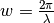

yeh_tm.System¶
-
class
yeh_tm.System(theta=0.0, phi=0.0, substrate=None, superstrate=None, layers=[])¶ Construct an instance of the System class, which manages the optical system.
An optical system consists of the first (semi-infinite) layer (substrate), the intermediate layers and the last (semi-infinite) layer (superstrate). The superstrate is assumed to be isotropic and only the xx component of the dielectric tensor is used for the calculation of the in-plane (x, y) propagation constants.
Parameters: - theta (mixed) – Angle of incidence versus the surface normal / z-axis (deg, default = 0). The plane of incidence is the x-z-plane. May be an array.
- phi (float) – Angle of rotation of the system around the z-axis (deg, default = 0).
- substrate (layer) – Layer definition of the substrate. If None, use vacuum.
- superstrate (layer) – Layer definition of the superstrate. If None, use vacuum.
- layers (list) – A list of layer definitions for the intermediate layers sorted from substrate to superstrate.
Important
The frequency w which is used for the calculations is actually the wavenumber in vacuum, i.e. .
-
__init__(theta=0.0, phi=0.0, substrate=None, superstrate=None, layers=[])¶
Methods
__init__([theta, phi, substrate, ...])add_layer(L)Add a layer L to the system. calculate_T(w)Calculate the system transfer matrix  for a given frequency.
for a given frequency.get_electric_field(w, dz[, pol, x, y])Calculate the (complex) electric field profile for a given frequency w. get_field_coefficients(w)Shortcut to calculate all reflection / transmission coefficients as function of frequency w. get_field_coefficients_AOI(w, AOI)Shortcut to calculate all reflection / transmission coefficients as function of angle of incidence. get_intensity_coefficients(w)Shortcut to calculate all intensity reflectance / transmittance terms as function of frequency w. get_intensity_coefficients_AOI(w, AOI)Shortcut to calculate all intensity reflectance / transmittance terms as function of angle of incidence. get_layer(pos)Returns the layer specified by position. get_layers()Returns the list of layers. get_num_layers()Returns the number of layers in the stack. get_substrate()Returns the substrate layer class. get_superstrate()Returns the superstrate layer class. insert_layer(L, pos)Insert a layer at a given position. remove_layer(pos)Removes the layer at a given position. rxx()Returns the x,x component of the field reflection coefficient (incident x, reflected x). rxy()Returns the x,y component of the field reflection coefficient (incident x, reflected y). ryx()Returns the y,x component of the field reflection coefficient (incident y, reflected x). ryy()Returns the y,y component of the field reflection coefficient (incident y, reflected y). set_phi(phi)Set rotation of sample around the z-axis (in deg). set_substrate(S)Set the substrate to S. set_superstrate(S)Set the superstrate to S. set_theta(theta)Set angle of incidence to theta (in deg). txx()Returns the x,x component of the field transmission coefficient (incident x, transmitted x). txy()Returns the x,y component of the field transmission coefficient (incident x, transmitted y). tyx()Returns the y,x component of the field transmission coefficient (incident y, transmitted x). tyy()Returns the y,y component of the field transmission coefficient (incident y, transmitted x). Attributes
cspeed of light in vacuum